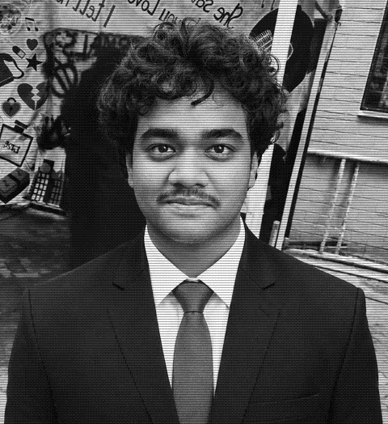

NODE MIT MANIPAL
STATUS ONLINE
PRATYUSH ACHARYA
> degree .... B.Tech, Cyber Physical Systems
> school .... School of Electrical Engineering, Manipal Institute of Technology (MAHE), Manipal, India
> dates ..... Jul 2025 to Jul 2029 (expected)
Into embedded systems, CPS security, sensing and robotics. OPENto internships, as well as research assistant and research intern roles.
- Electronics & Control Systems member, Project DronAid (since Feb 2026)
- Codeforces: ginini
- Off the clock: photography and videography
RESEARCH
MANUSCRIPT
Stealthy False-Data Injection on UAV Battery Sensing and a Powertrain-Consistency Detector for Medical Delivery Drones
P. Acharya and Srinivas G.
Shows when model-consistent "virtual battery" attacks are undetectable from battery telemetry alone, and proposes a powertrain-consistency detector using ESC duty cycles and rotor speeds with a two-channel CUSUM.
> 2,500 simulated missions per condition: caught every phantom and hidden-drain attack (median 3.0 s and 5.5 s) at a 0.34% false-alarm rate.
MANUSCRIPT
Bilinear Actuation Watermarking: Authenticating Low-Cost PM2.5 Sensors in Smart Air Purifiers with a Secret Fan-Speed Challenge
P. Acharya (sole author)
A secret randomised fan-speed challenge whose log-slope test is invariant to sensor gain, with CUSUM and GLRT timing tests.
> 1,000 simulated rooms per condition: detected 90 to 93% of replay attacks within 6 h and all stuck-at attacks, for about 1.0 W and 1.5 dB(A).
PROJECTS
Rubik's Cube Solver
C++ · WebAssembly
Kociemba two-phase solver written from scratch: 20 moves or fewer, median 54 ms. Runs in the browser via WASM with a 3D cube.
Which Way?
Java · Android
Fully offline compass to the nearest places around campus, using GPS, the rotation-vector sensor and bundled OpenStreetMap data. Friends share pins over a Bluetooth LE gossip mesh. ~50 KB APK, no internet permission.
PuriSwitch: Smart Air Purifier Switch
ESP32 · team of 3
Smoke, DHT11 and MQ7 sensing with an ESP32 soft-AP web dashboard.
Contactless Water Level Sensor
ESP32 · C++
Reads water level through a non-conductive wall with the ESP32's capacitive touch pins, with a live Wi-Fi web view.
SKILLS
- [-] Languages
- C
- C++
- Java
- Python
- [-] Hardware
- ESP32
- Microcontrollers
- Sensors
- PCB design (KiCAD, Proteus)
- [-] Robotics & modelling
- ROS
- ArduPilot
- MATLAB
- Simulink
- [-] Tools & platforms
- Linux
- Git
- Tinkercad
- WebAssembly
- Android
CERTIFICATIONS
- ROS Workshop, IE Mechatronics Students' Chapter, Manipal (Apr 2026)
- MATLAB Onramp, MathWorks